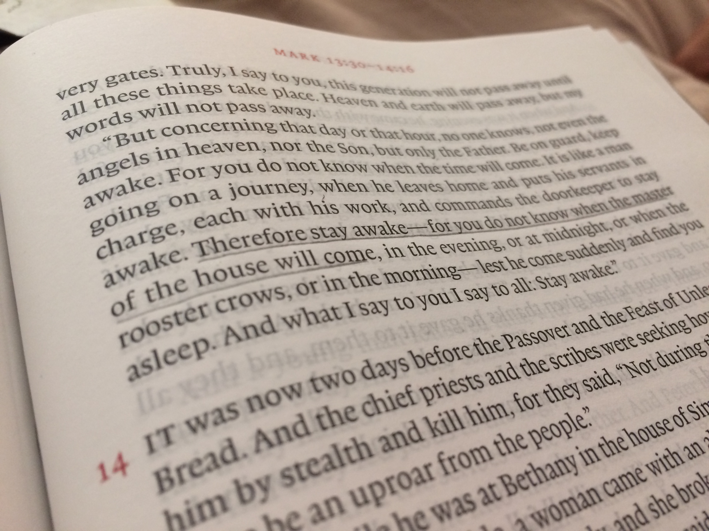
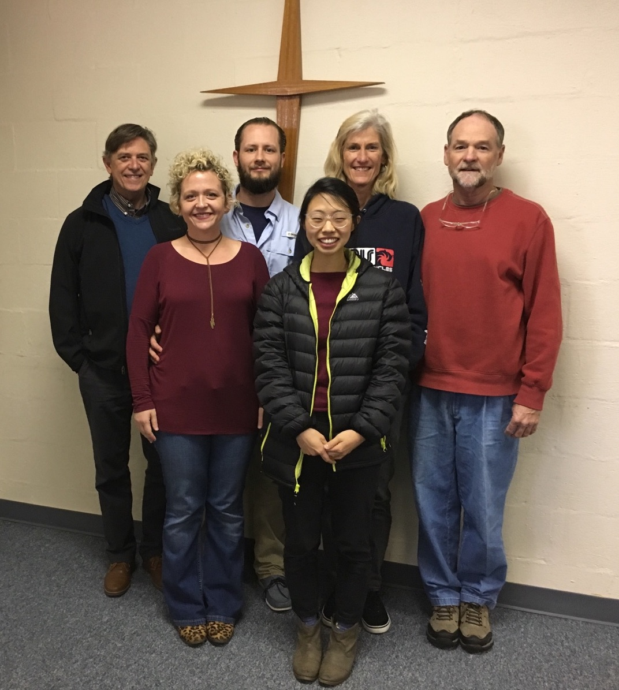
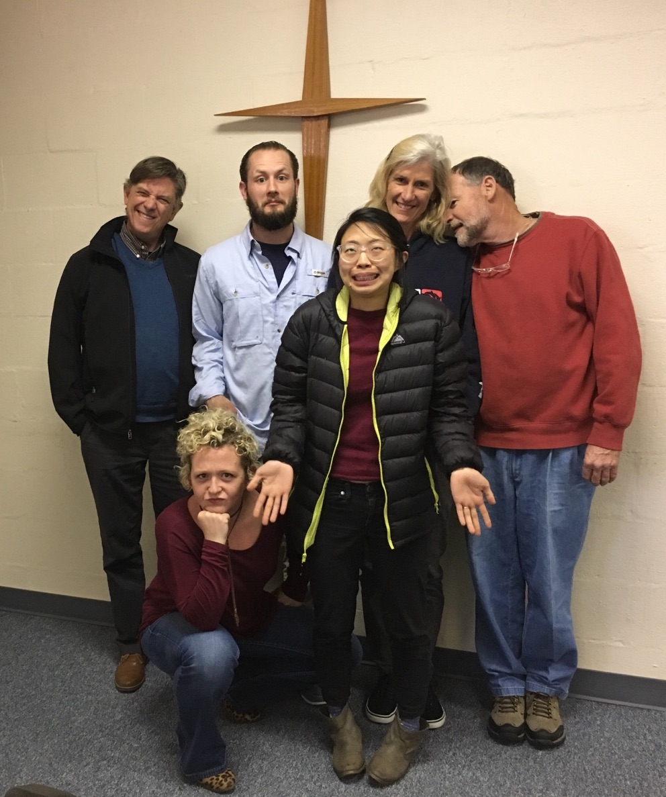
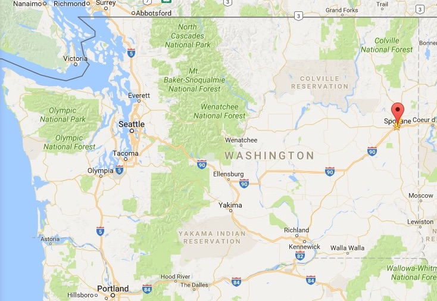

Spo-what!?!
 For some of us, we will never stop wrestling over the tension between patience and contentment on one side and holy ambition on the other. Every passing day weighs heavy on our hearts, as we see the years of our lives slipping by us into the past. We desperately want to accomplish much for the Lord in the brief time God has given us, and want to use the time and resources that our Master has entrusted to us as best we can. It’s hard to feel satisfied when you’re always looking over your shoulder, wondering exactly how much longer He’s going to wait.
And yet . . . there’s that “patience” issue that we know we’re not supposed to just ignore.
Of course, to be clear, patience should never be an afterthought, something to only pay attention to once all of the work that you really have to do is taken care of already. It’s just that sometimes, that’s how it feels.
 ACTION Orientation Candidates!
Lesson Learned/Learning
Last month, Rebekah and I made a quick trip to Seattle so that Rebekah could go through the ACTION orientation/interview process and become official approved as an ACTION missionary.
It was a good time overall, and we were able to connect with friends and family that we weren’t able to see last time we visited (in August) in to connect with my home church in Seattle. Even more than that, Rebekah had a great time at the orientation and gained a lot from all of the wisdom and insight from the veteran missionaries who were there.
And then . . . disaster struck.**  **(not really, just saying that for dramatic effect). That’s right, you guessed it: Rebekah was sentenced to a year’s worth of Bible training and a month of missionary classes with no chance of parole.
Actually, Rebekah loves this kind of thing. But for Ryan (and if you haven’t guessed it already, Rebekah let him write this one), he couldn’t help but think of the implications for their departure date. And just when things are starting to fall into place . . .
You might have guessed from the introduction, but it was/is a struggle to see this as a blessing rather than a hurdle. (As if the Father gives bad gifts and doesn’t care about Cambodia as much as we do). But the situation is a good reminder that:
- first and foremost, God is sovereign and both deserves and demands our trust;
- second, to trust the wisdom of those older and wiser than us;
- and third, to have a long-term perspective, to not rush into things without being prepared.
And as is true in all circumstances, it is better to leave the question of whether not we are prepared in God’s hands rather than our own.
Logistically Speaking:
At this point, we cannot know what exactly this will mean for our timeline. However, it is safe to say that we will not be able to leave until December, and a good chance it won’t be until May 2018.
 Right outside of Idaho! Accordingly, we have decided that it would be best to move to Spokane. I know, I know, I’m as surprised as you are. I have been giving my brother Jason grief for living in Spokane for years now, and now we’re moving there.
But it actually seems to be a really good fit for us during this time for number of reasons:
- Housing and living costs are very affordable (especially in comparison to LA), which will allow us to save that more money even though Rebekah will be focused on training rather than working;
- Rebekah will be able to take the missions classes she needs in Spokane;
- My brother lives in Spokane and it will be a good opportunity to spend time with him before we leave for Cambodia;
- With less distractions/interruptions, hopefully we will be able to bunker down for a few months, become better trained and prepared, focus more on our marriage, exercise more to prepare for the difficult Cambodian climate, and still have time to work hard and save up for our departure.
We will actually be leaving in just under 2 weeks, on June 12. We apologize especially to our friends and family in Los Angeles for leaving on such short notice, but these last several weeks since Rebekah has gotten back from the orientation has been a whirlwind, as we have been frantically trying to figure out what would be best in light of our longer stay in the States.
It might not be possible for us to meet with you before we leave since we have a lot of preparation to do before June 12, but if not we’d still love to hear from you and catch up, even if it’s from Spokane.

A way you can help:
We’re going to be driving up to Spokane in Rebekah’s tiny yellow car. Accordingly, we can’t take very much. This will be good practice for Cambodia, and a good opportunity to throw a lot away. But also, there are some things that we would hope to have in Cambodia with us in the long term, even if we do not need them in Spokane or even in the first few years in Cambodia. Mostly, these are books that Ryan would need for Bible teaching, but take up too much space in the car for the trip to Spokane and weigh too much for our suitcases for our first trip to Cambodia. If you have some extra room for even just a box or two that you won’t need for the next few years, this would be a big help for us long-term. The plan would be to get these boxes from you and bring them to Cambodia when we come back.
Either way, we are grateful for your continued support, which has endured despite several delays. Every day we see more and more how God uses your prayers to close some doors and open new ones, all for our good. Gratefully,
Ryan and Rebekah
Please pray
- For our preparation:
- That we would seek to equip ourselves, not only by growing in the knowledge of missionary practices and God’s Word and missionary practices, but most of all in knowing God Himself.
- For our plans:
- That we would be able to navigate through these next few months with wisdom from above.
Thanks again for your enduring prayers and support.